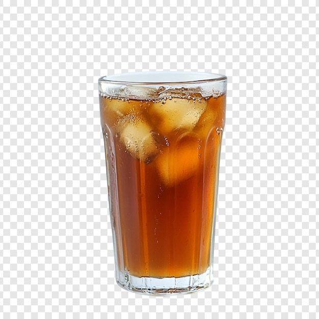

This sweet tea is a quintessential Southern refreshment, crafted with a strong foundation of robust black tea. A generous 10 to 15 minute steep ensures a rich, full-bodied brew, which is then thoroughly sweetened with a full cup of granulated sugar dissolved while the tea is still warm, guaranteeing an even and undeniably sweet profile.
Once cooled with additional water and meticulously chilled, this classic beverage offers a deeply satisfying balance of bold tea flavor and abundant sweetness. Designed to be served over ice, it delivers a perfectly refreshing and consistently sweet experience, ideal for cooling down on a warm day or enjoying a taste of tradition.